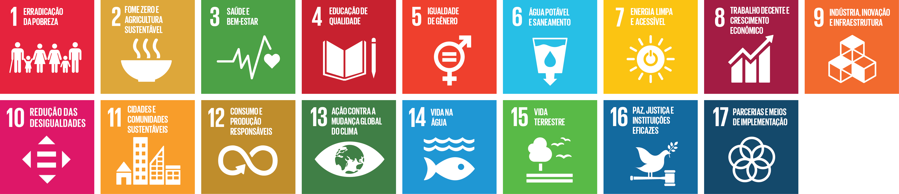
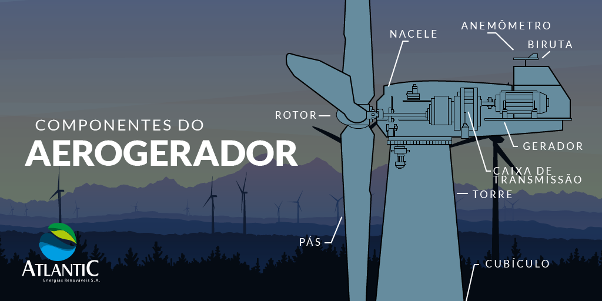

Introdução

Os Objetivos de Desenvolvimento Sustentável são uma lista de 17 objetivos que englobam fatores sociais, ambientais e econômicos, idealizados para serem cumpridos até 2030. Organizados pelas Nações Unidas, são ações de contribuição global (o que inclui o Brasil). Neste site, o foco está para o ODS de número 7: Energia Limpa e Acessível, o qual se concentra em trazer energia elétrica para todos ao mesmo tempo em que é feita uma transição de fonte poluentes para fontes não poluentes. Na barra lateral você pode encotrar alguns tópicos e ler mais sobre tais fontes não poluentes.
De 2000 a 2013, mais de 5% da
população mundial obteve acesso à eletricidade (de 79,313% para 84,58%). Para os próximos anos a
tendência é aumentar a demanda por energia barata. Contudo, combustíveis fósseis e suas emissões de
gases de efeito estufa provocam mudanças drásticas no clima. Atender às necessidades da economia e
proteger o meio ambiente é um dos grandes desafios para o desenvolvimento sustentável.
— Leia mais em www.agenda2030.org.br
Desenvolvedores:
Vinicius Ferreira
Sorocaba - SP
Estudante de Engenharia de computação na UniFacens
Yuri Achnitz
Sorocaba - SP
Estudante de Engenharia de computação na UniFacens
Procurando emprego
LinkedIn GitHubFelipe Moraes
Sorocaba - SP
Estudante de Engenharia de computação na UniFacens
Eólica
O que é energia eólica? Vento.
Quando massas de ar em movimento colidem-se com pás captadoras, sua energia cinética se transforma em energia elétrica através das turbinas eólicas. O poder do vento também pode ser convertido em energia mecânica para ser utilizado em moinhos.
Um Aerogerador é composto por diversos componentes:
- Torre: A estrutura que sustenta o rotor e a nacele
- Rotor: É onde está o cubo que fixa as pás
- Pás: São as responsáveis por captar o vento
- Nacele: Componente que comporta a caixa de multiplicação, o gerador e o transformador
- Caixa de multiplicação: Este item aumenta a rotação vinda do rotor
- Gerador: É a parte que faz a energia mecânica se converter em energia elétrica
- Anemômetro: Mede a velocidade instantânea do vento
- Biruta: Mede a direção instantânea do vento para que a navele gire e otimize a geração elétrica
- Cubículo: Posto perto do nível do chão e isolado a ar ou hexafluoreto de enxofre, possui função de proteção e manobra

Vantagens
- É uma fonte renovável e limpa
- É inesgotável
- Não há custos para obter matéria prima
- Custos de implantação de manutenção são baixos
- Cria novos empregos em áreas mais periféricas
Desvantagens
- Depende de uma grande disponibilidade de vento
- Aves podem morrer se voarem muito perto das pás
- Geram uma grande poluição sonora
- Causam interferência em radares meteorológicos
Pode causar diversos impactos socioambientais
Faça uma turbina eólica caseira
Nuclear
A Energia nuclear, também chamada de atômica, é a energia produzida nas usinas termonucleares, que utilizam o urânio e outros elementos como combustível. O funcionamento de uma usina nuclear é a utilização do calor produzido na reação do elemento radioativo para gerar eletricidade. O calor é proveniente da fissão dos átomos de urânio.

Esquema de funcionamento da produção termonuclear
Por ser uma fonte de energia altamente concentrada e de elevado rendimento, diversos países utilizam a energia nuclear como opção energética. As usinas nucleares já respondem por 16% da energia elétrica produzida no mundo. Mais de 90% das usinas nucleares estão concentradas nos Estados Unidos, na Europa, no Japão e na Rússia. O governo russo inaugurou em abril de 2018 a primeira usina nuclear flutuante do mundo, localizada no Mar Ártico.
A Central Nuclear Almirante Álvaro Alberto (CNAAA), localizada em Angra dos Reis
Vantagens
- É uma fonte 100% não poluente
- Não é necessario uma grande área para construção
- O combustivel principal, o urânio, é um material abundante na natureza
Desvantagens
- Descarte de lixo radioativo
- Risco de acidentes nucleares
A usina nuclear de Angra dos Reis no Brasil:
Hidrelétrica
A Energia Hidráulica é produzida através do movimento das águas de rios ou até mesmo dos oceanos. Com ela, é possível gerar energia mecânica, posteriormente sendo transformada em elétrica, a mesma que chega na cidade e vai para nossa casa, equipamentos eletrônicos, entre outros. Tudo isso através da Usina Hidrelétrica, conhecidas pelas grandes barragens e por suas comportas, servindo para liberar a água caso há risco de transbordamento do reservatório ou rompimento da barragem.
Para produzir a energia hidráulica é necessário construir uma usina hidrelétrica, com ela utiliza-se uma fonte que é limpa e renovável, não produzindo o dióxido de carbono (CO2) prejudicando a saúde do ser humano e o meio ambiente.
As vantagens dela são:
- Energia limpa e renovável
- Não emite dióxido de carbono
- Controla rios propensos a enchentes
E as desvantagens dela são:
- Desmatamento para construção
- Alto custo para construção
- Realocação da comunidade local